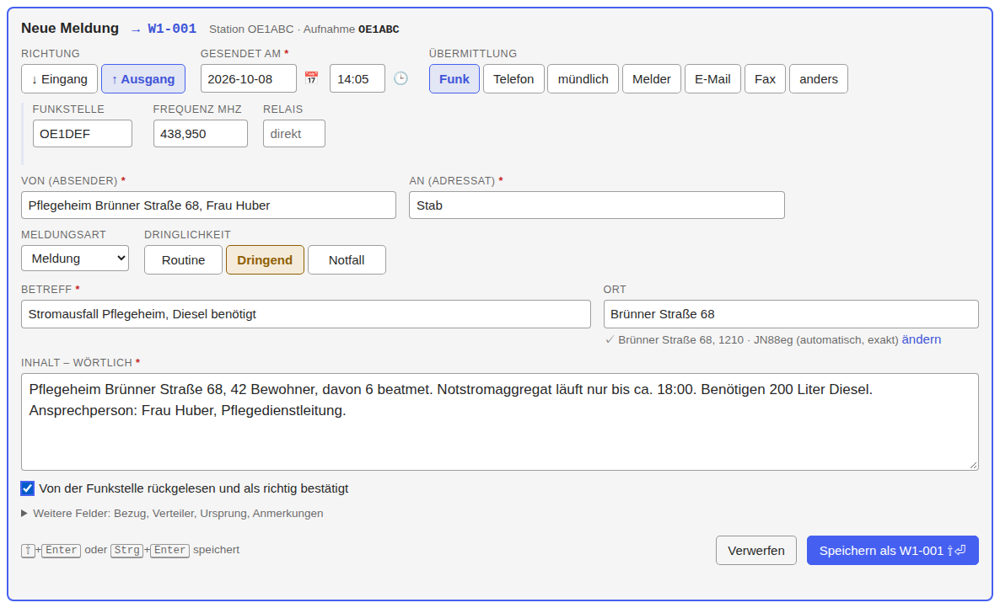

Tutorial: eine Notmeldung von der Lichtinsel zum Stab
← Notfunk-Anleitung · Notfunk-Meldebuch öffnen
Das Beispiel: Übung „Blackout Wien“. Sie sind Funkamateur an der Lichtinsel Floridsdorf. Frau Huber, Pflegedienstleiterin eines Pflegeheims in der Brünner Straße 68, kommt zu Fuß: Das Notstromaggregat läuft nur bis etwa 18 Uhr, und 6 beatmete Bewohner sind auf den Strom angewiesen. Das Heim braucht Diesel für das Aggregat. Rufzeichen und Namen im Beispiel sind frei erfunden.
Zum Nachspielen gibt es eine fertige Datei: notfunk-full.json (über „Wiederherstellen…“ einspielen). Für das Tutorial legen Sie lieber einen eigenen Einsatz an, dann sehen Sie jeden Schritt.
1. Vorbereiten
- Notfunk-Meldebuch öffnen, einmal mit Internet, und als App installieren; danach läuft es auch offline („offline bereit ✓“ oben rechts, Vorbereitung).
-
„+ Neuer Einsatz“. Tragen Sie ein: Einsatz „Übung Blackout Wien“, Stationskürzel W1, Ihr Stationsrufzeichen (hier OE1ABC), den Standort („Lichtinsel 12 Floridsdorf“), Ihr Rufzeichen als Operator, „Für Stelle“ Stab und die Frequenz des lokalen Informationsnetzes. Dann „Einsatz anlegen“.

Das Stationskürzel steht vor jeder Nummer. Hat die Lichtinsel zwei Geräte, bekommt jedes ein eigenes Kürzel (W1, W2), damit die Nummern nie doppelt vorkommen.
2. Die Meldung aufnehmen
Frau Huber schildert den Notfall. Sie nehmen im Formular oben auf. Weil Sie die Meldung weiterfunken, ist die Richtung Ausgang (↑).
- Richtung: Ausgang. Übermittlung: Funk. Funkstelle: das Rufzeichen der Gegenstelle, an die Sie funken (hier OE1DEF, der K-Vorsorgestandort); Frequenz und Relais sind vorbelegt.
- Von: „Pflegeheim Brünner Straße 68, Frau Huber“. An: „Stab“. Den Absender nennt die Person, nicht Sie.
- Dringlichkeit: hier „Dringend“ (vor Routine zu übermitteln); „Notfall“ ist für Gefahr für Leib und Leben, die sofort droht (Dringlichkeit). Im Zweifel fragen Sie die Leitstelle.
- Betreff: „Stromausfall Pflegeheim, Diesel benötigt“. Ort: die Adresse; beim Tippen schlägt die Ortssuche Treffer vor (offline).
- Inhalt – wörtlich: der Wortlaut, wie ihn Frau Huber nennt.
-
Rücklesen (empfohlen, nicht zwingend): Lesen Sie die Meldung der Person vor. Sagt sie „stimmt“, setzen Sie das Häkchen (Leertaste).

-
Speichern mit ⇧+Enter. Erst jetzt wird die Nummer vergeben, hier W1-001. Fehlt etwas, das nicht zwingend ist (zum Beispiel die Funkstelle), fragt das Formular nach; mit „Trotzdem speichern“ geht es weiter.
Die Meldung steht jetzt im Meldebuch mit dem Status zur Übertragung.
3. Funken und Übertragung festhalten
Sie rufen den K-Vorsorgestandort und lesen die Meldung vor. Der Empfänger liest zurück.
- Klicken Sie in der Zeile von W1-001 auf „übertragen“; es öffnet sich ein kleines Fenster. Übertragen an: das Rufzeichen der Gegenstelle, Zeitpunkt leer = jetzt; Enter trägt ein.
- Hat die Gegenstelle den Empfang bestätigt, tragen Sie „Empfang bestätigt“ ein (durch wen, wann).
-
Nennt die Meldesammelstelle später eine Referenz (hier „GZ 0412“), tragen Sie sie in der Meldung ein.

Der Ablauf rechts in der Meldung zeigt jeden Schritt mit Uhrzeit und Operator. Hier endet Ihre Aufgabe für diese Meldung, bis die Antwort kommt.
4. Die Antwort entgegennehmen
Der Stab antwortet: „Tankwagen mit 200 Liter Diesel ist unterwegs, Ankunft ca. 15:30.“ Die Antwort geht über die Meldesammelstelle, die Funkstelle der ELS und den K-Vorsorgestandort an Sie.
- Öffnen Sie W1-001 und wählen Sie „Antwort erfassen“. Das Formular kommt mit Richtung Eingang, vertauschtem Absender und Adressat und gesetztem Bezug „Antwort auf W1-001“.
- Tragen Sie den Wortlaut der Antwort ein, lesen Sie zurück und speichern Sie (W1-002).
- Die ursprüngliche Meldung W1-001 steht jetzt auf beantwortet.
-
Sagen Sie Frau Huber die Antwort, und halten Sie fest, dass Sie sie weitergegeben haben („übergeben“ an Frau Huber).

5. Am Ende
- Sichern: Der Sicherungsstand oben rechts zeigt, wie viele Meldungen noch nicht gesichert sind; ein Klick lädt eine Sicherung (JSON) herunter (Exporte und Sicherung). Legen Sie die Datei an einen sicheren Ort.
- Drucken: Das leere Formular für die Arbeit auf Papier: Leeres Formular (PDF) herunterladen. Eine einzelne Meldung als Formular, das ganze Meldebuch oder einen Zeitraum als PDF (Ausdruck und PDF).
- Schichtwechsel: den Operator im Feld „Einsatz“ ändern.
- Wenn etwas schiefgeht (anderer Tab, Update, voller Speicher), sagen die Hinweise, was zu tun ist (Speichern, Hinweise, Verwerfen).
Weiter: Vorbereitung